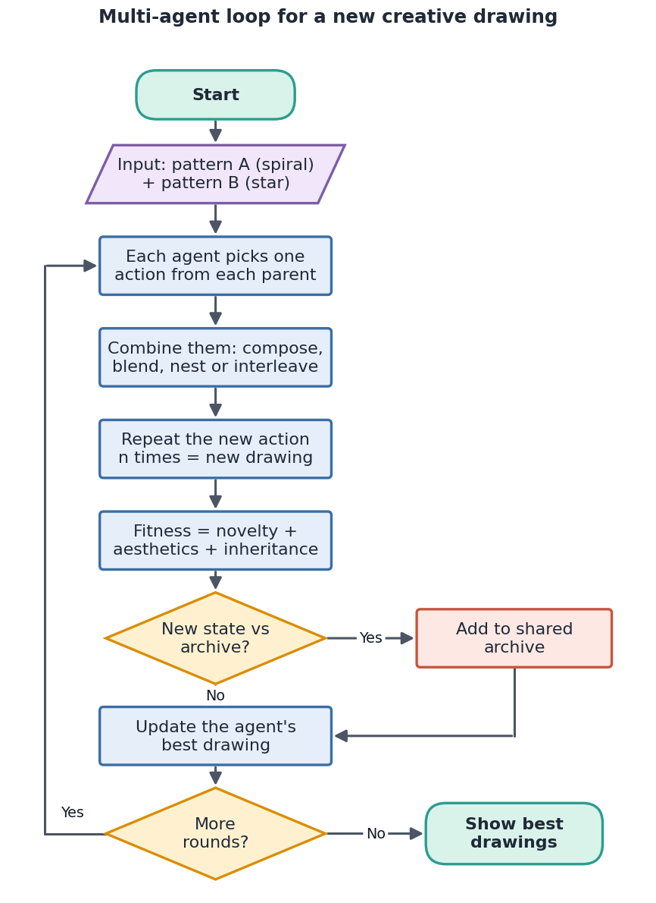
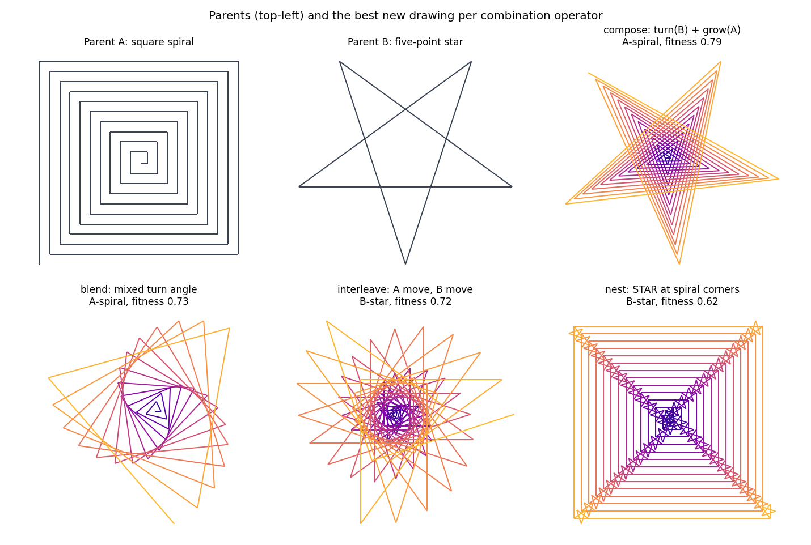
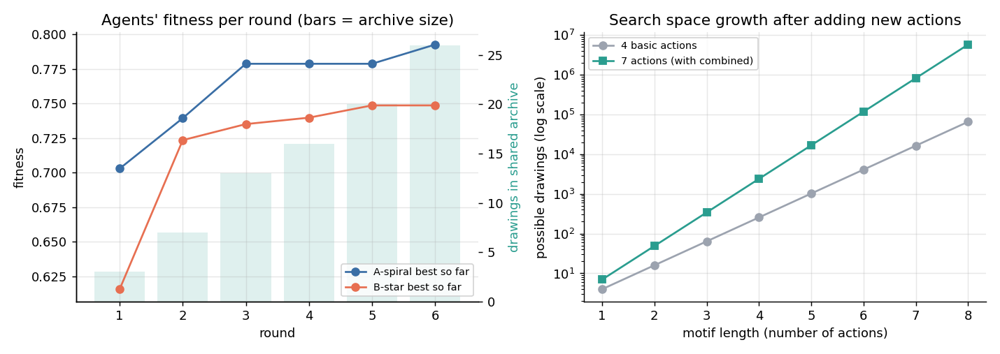
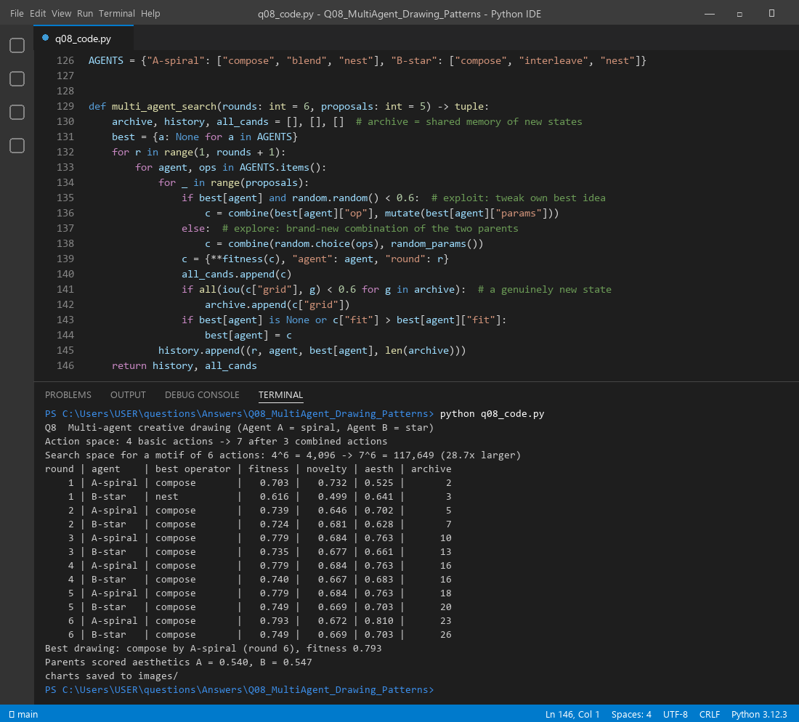

Think of two artists. One only draws square spirals; the other only draws stars. Each artist knows a few moves: go forward, turn, make the next step longer. Neither can draw anything new with their own moves alone. The trick is to glue one move from each artist into a brand-new move, for example "turn like the star and grow like the spiral" in a single step. That new move opens up drawings neither artist could reach before. Two agents keep proposing such combinations, a fitness function scores them, and a shared archive remembers what is already done.
The search space is the set of all states an agent can reach from the start state by applying its actions (operators), again and again. It is an implicit graph: states are nodes and actions are edges. We never build it fully; the search algorithm explores a small part of it. Two things decide its size:
Here a state is a drawing program (a motif of actions repeated n times). Adding new actions therefore expands the search space directly. That is the creative lever in this question.
F (forward), L(θ) (turn left),
G(g) (make the step longer) and C (change colour).| Part | In this design |
|---|---|
| Agents | A-spiral (likes compose, blend, nest) and B-star (likes compose, interleave, nest) |
| State | A drawing program: one motif of actions repeated n times (n = 20–70) |
| Basic actions | F, L, G, C (4 actions) |
| New actions | LG = turn + grow in one move, STAR = whole star as one move,
BLEND = mixed turn angle (now 7 actions) |
| Agent behaviour | 60% of the time an agent tweaks its own best idea (exploit); otherwise it tries a fresh combination (explore) |
| Shared archive | Stores every drawing that is clearly new (overlap with all archived drawings below 60%) |
| Goal | Highest fitness after 6 rounds, plus a set of diverse new drawings in the archive |
| Way | What it means | Example from our run |
|---|---|---|
| Compose | Run one action right after the other and treat the pair as one new action: a₂∘a₁ | LG = L(144°) from the star + G(3) from the spiral. The result is a growing star-spiral. |
| Blend | Mix the parameters of two similar actions | BLEND turn = α·90° + (1−α)·144°. With α = 0.5 that is 117°. |
| Nest | Pack one whole pattern into a single action and use it inside the other | STAR is drawn at every corner of the spiral (two levels of scale). |
| Interleave | Alternate the two parents' moves | One spiral move, then one star move, and so on. |
Every way creates a new action. The action space grows from 4 to 7. For a motif of 6 actions the search space grows from 46 = 4,096 to 76 = 117,649 programs: 28.7 times larger (Figure 3, right). This is exactly how adding an action expands the search space.

function MultiAgentDrawing(parentA, parentB, rounds, k):
archive ← { }; best[agent] ← none for both agents
for r = 1 to rounds:
for each agent in {A-spiral, B-star}:
repeat k times:
if best[agent] exists and random() < 0.6:
candidate ← combine(best[agent].operator, mutate(best[agent].params))
else:
op ← random choice from agent's favourite operators
candidate ← combine(op, random params) # new action
drawing ← run_turtle(candidate) # new state
score ← fitness(drawing)
if overlap(drawing, every archived drawing) < 0.6: archive.add(drawing)
if score > best[agent].score: best[agent] ← candidate
return best drawings + archive
Fitness = 0.4 × Novelty + 0.4 × Aesthetics + 0.2 × Inheritance
Both parents start with an aesthetics score of only 0.540 (spiral) and 0.547 (star). The table shows each agent's best drawing so far after every round:
| Round | Agent | Best operator | Fitness | Novelty | Aesthetics | Archive size |
|---|---|---|---|---|---|---|
| 1 | A-spiral | compose | 0.703 | 0.732 | 0.525 | 2 |
| 1 | B-star | nest | 0.616 | 0.499 | 0.641 | 3 |
| 3 | A-spiral | compose | 0.779 | 0.684 | 0.763 | 10 |
| 3 | B-star | compose | 0.735 | 0.677 | 0.661 | 13 |
| 6 | A-spiral | compose | 0.793 | 0.672 | 0.810 | 23 |
| 6 | B-star | compose | 0.749 | 0.669 | 0.703 | 26 |
Check of the winner: 0.4 × 0.672 + 0.4 × 0.810 + 0.2 × 1.0 = 0.793. B-star started with "nest", then switched to "compose" after it saw that operator do better. By the end the archive held 26 different new drawings.


The program q08_code.py draws the parents, runs both agents for 6 rounds and saves every figure in this answer.

Files in this folder: q08_code.py (source), q08_code.ipynb (Colab/Jupyter version, already run),
q08_output.txt (console output), images/ (all figures).